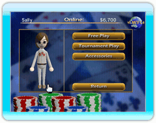

12 |
El Torneo en CWF de Nintendo |
 |

Es semejante a los juegos en la modalidad de juego de “un solo jugador” (Single Placer) y te permite decidir participar en un torneo en CWF de Nintendo. El derecho de entrada en el torneo será deducido de tu cuenta de CWF de Nintendo en el momento de inicio efectivo del juego, y no mientras estés buscando a jugadores disponibles para jugar contigo. Si por alguna razón se pierde la conexión durante el juego, tus ganancias no serán abonadas.
Un torneo de una sola ronda debe ser totalmente terminado para asegurar que un bote de ganancias sea abonado y guardado en tus fondos. En caso de ganar una ronda de un torneo de rondas múltiples, podrás guardar tu asiento en la próxima ronda y continuar el juego más tarde. Si tienes la posibilidad de continuar un torneo, el botón “Continuar torneo” (Continue Tournament) se activará. Si entraras a participar en un nuevo torneo mientras estés activo en otro, perderás tu asiento en este torneo. |
 |
 |
 |